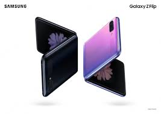

스마트폰은 PC와 같은 기능과 더불어 고급 기능을 제공하는 휴대 전화이다. 최초의 스마트폰은 IBM 사이먼이다. IBM사가 1992년에 설계하여 그 해에 미국 네바다 주의 라스베이거스에서 열린 컴댁스에서 컨셉 제품으로 전시되었다.
스마트폰은 휴대 전화의 기능 외에도 팩스, 오락, 주소록, 세계 시각, 계산기, 전자 우편, 터치 스크린 등 전화 기능이 있는 소형 컴퓨터라고 볼 수 있다.
스마트폰 활용의 핵심은 다양한 애플리케이션을 이용할 수 있는 애플리케이션 스토어에 있다. 애플리케이션 스토어는 게임, e북, 음악, 동영상 등 사용자들이 원하는 애플리케이션과 콘텐츠를 쉽게 다운받을 수 있도록 서비스를 제공한다.
안드로이드는 휴대 전화를 비롯한 휴대용 장치를 위한 운영 체제와 미들 웨어, 사용자 인터페이스 그리고 응용 프로그램 등을 포함하고 있는 모바일 운영 체제이다.
안드로이드는 자바와 코틀린 언어로 응용 프로그램을 작성할 수 있게 하였으며, 컴파일된 바이트 코드를 구동할 수 있는 런타임 라이브러리를 제공한다.
또한, 소프트웨어 개발 키트(SDK)를 통해 프로그램을 개발하는데 필요한 각종 도구와 응용 프로그램 인터페이스(API)를 제공한다.
구글은 2005년에 안드로이드 사를 인수한 후 2007년 11월에 안드로이드 플랫폼을 휴대용 장치 운영 체제로서 무료 공개한다고 발표했다.
구글은 안드로이드의 모든 소스 코드를 오픈 소스 라이선스인 아파치 v2 라이선스로 배포하고 있어 기업이나 사용자는 각자 안드로이드 프로그램을 독자적으로 개발해서 탑재할 수 있다.
그리고 등록한 개발자들이 소비자에게 응용 프로그램을 판매할 수 있는 구글 플레이를 제공하고 있으며, 이와 별도로 각 제조사 혹은 통신사별 응용 프로그램 마켓이 함께 운영되고 있다.
iOS는 처음 공개되었을 당시에는 사용자가 개발한 애플리케이션의 추가가 허용되지 않았으나, 2088년 6월 이후 SDK가 공개되어, 2.0 버전부터는 앱스토어에 사용자 애플리케이션을 등록할 수 있게 되었다.
iOS의 사용자 인터페이스는 멀티 터치 제스처에 의한 직접 조작 개념에 기반하고 있다. 인터페이스 컨트롤들은 슬라이더, 스위치, 버튼 등의 요소를 이루고 있다.
사용자 입력에 대한 반응은 멀티 터치 제스처를 응용한 다이렉트 매니퓰레이션 개념에 기반하고 있다. 결국 애플은 부드러운 인터페이스를 제공하고자 했다.
아이폰과 아이팟 터치에 내장된 중앙 처리 장치는 ARM 기반 프로세서이다. OpenGL ES 1.1 버전 소프트웨어가 내장되었고 파워 VR 3차원 그래픽 하드웨어 가속 그래픽 프로세서에 의해 구동된다.
iOS와 ARM 아키텍처에 맞게 컴파일된 응용 소프트웨어만이 iOS 기기에서 구동되기 때문에 공식적으로 인허가를 받아 앱스토어에 올라온 응용 프로그램만 설치할 수 있다.
최근 스마트폰 모양
| 안드로이드폰 |
 |  |  |